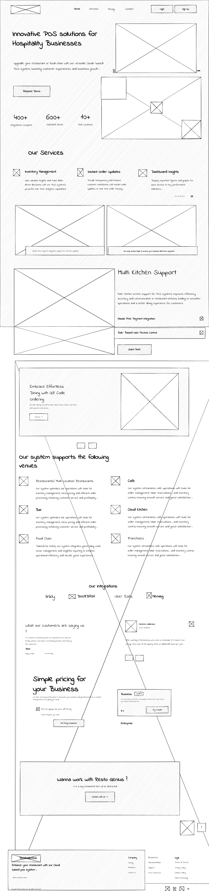
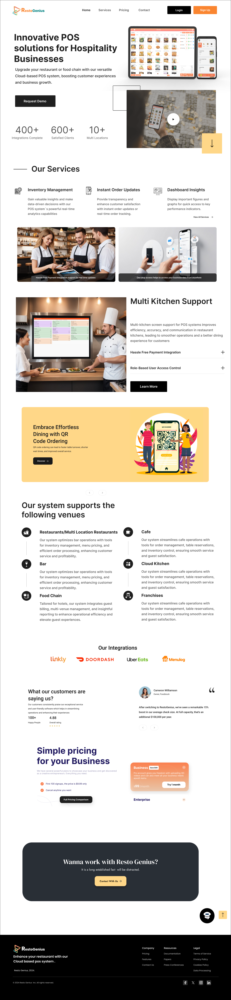

Problem Statement:
RestoGenius aimed to provide an affordable POS solution tailored for small businesses in the Austrian hospitality sector, addressing key challenges such as:
- Affordability: Existing POS systems were costly for small businesses like cafes, bars, and franchises, impacting their ability to invest in technology that could streamline operations.
- Feature Suitability: Larger POS systems often included features unnecessary for smaller businesses, complicating usability and increasing costs without corresponding benefits.
User Research
Analyzed market trends and competitor offerings to identify gaps in affordable, feature-rich POS solutions.
Note: Due to time constraints, interviews were not conducted. Instead, the design process relied on information provided by the CEO and director of the company to deliver the entire design within a tight deadline.
Solution
- Affordable Pricing Model: Introduced a subscription-based pricing model tailored to the financial capabilities of small businesses, offering essential features at a competitive price point.
- Streamlined User Interface: Designed an intuitive and user-friendly interface that simplifies daily operations such as order management, inventory tracking, and customer interactions.
- Customizable Features: Provided modular features that allow businesses to customize the POS system according to their specific needs, avoiding unnecessary costs for unused functionalities.
Initial Wireframes
I had crafted initial wireframes for RestoGenius that visually map out the interface's structure and functionality. These wireframes strategically place key elements such as navigation menus, content sections, forms, buttons, and interactive components, ensuring optimal user flow, clear information hierarchy, and enhanced usability throughout the design.

UI Screens
The UI screens for RestoGenius feature the final visual design, including colors, typography, and imagery that enhance user experience. These screens cover various parts of the application, ensuring consistency and clarity throughout.

Prototype
Here the prototype for RestoGenius demonstrate the functional design, integrating interactive elements, navigation flows, and user interactions.
Visit Website
Impact
- Increased Accessibility: Enabled small cafes, bars, and franchises to adopt modern POS technology previously inaccessible due to cost barriers.
- Positive Feedback: Received positive feedback from early clients for the system’s affordability, ease of use, and suitability for small business operations.
- Market Penetration: Successfully onboarded 3+ small businesses within the first week of launch, establishing RestoGenius as a preferred POS solution for affordability and functionality.
Future Improvements:
Continued enhancement of RestoGenius with advanced analytics for business insights, enhanced mobile support for on-the-go management, and expanded integrations with third-party services to further support small business growth and operational efficiency.